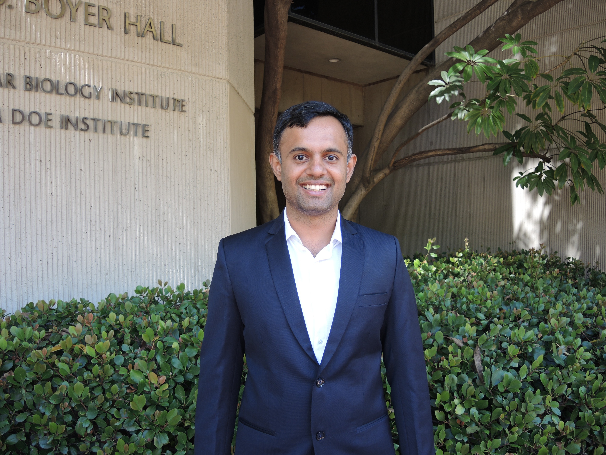

Postdoctoral Associate · UCLA — Integrative Biology & Physiology
Mathematical Biology · Network Science · Manifold Learning
I am a mathematician and data scientist working at the intersection of topology, network science, and systems biology. As a postdoc at UCLA's Deeds Lab in the Department of Integrative Biology and Physiology, I use topology and geometry to address fundamental questions such as how phenotypes maintain stability, and how disease networks evolve and function. Previously, I was a postdoctoral researcher at the Laboratory for Systems Medicine at the University of Florida (2024–25). I completed my PhD in Mathematics at UIUC under Vesna Stojanoska.

Modeling gene regulatory networks as discrete dynamical systems to understand phenotypic robustness and network stability.
This project examines the stability of attractors in Boolean network models of gene regulation. We investigate how canalization and network architecture shape the robustness of phenotypes under perturbation, and work toward deriving theoretical bounds that characterize the limits of attractor stability.
Applying topological data analysis and manifold learning to uncover low-dimensional geometric structure in high-dimensional biological datasets.
This project applies topological data analysis and manifold learning to fit manifold to high dimensional datasets. We are particularly interested in characterizing the topology of gene expression and neurological data to uncover hidden patterns and relationships that conventional analysis methods may overlook.
Using network-theoretic and topological tools to study modularity, resilience, and reorganization in disease networks, including epilepsy.
This project investigates how disease networks evolve over time, with a particular focus on identifying structural configurations that are more susceptible to seizure states. We aim to determine which network modifications can most effectively eliminate seizures while preserving essential brain function. Our current work centers on patients undergoing pre-surgical evaluation for epilepsy surgery, where we analyze the topological and network properties of their intracranial EEG data.
An interdisciplinary working group exploring the definition, detection, and functional consequences of modularity across biological networks.
The hypothesis that biological systems are "modular" is widely accepted in systems biology, yet no consensus exists on the right definition of a module — whether it should be a structural or dynamic property, or both — nor on the concrete benefits modularity confers on an organism. This interdisciplinary working group approaches the subject from both biological and computational directions.
My teaching philosophy is that active student engagement is indispensable for learning. I capture students' attention by telling mathematical stories, intentionally applying active learning techniques, encouraging self-directed learning, and striving to foster an inclusive environment where everyone can succeed. A version of my full teaching statement is available here.
At UCLA, as part of the QCBio Collaboratory, I teach short courses and workshops on programming, data science, and computational biology topics. These workshops are designed to be accessible to students with no prior coding experience, while still providing depth and practical skills for those with some background. In the Winter 2026 I taught a three-day workshop titled Introduction to Python. The workshop covers Python fundamentals, data structures and control flow, and concludes with hands-on exploratory analysis of single-cell RNA sequencing data.
This workshop is intended for researchers with some programming experience who want to learn how to apply image processing techniques to biological data. We will conver both classical imaging processing techniques and modern deep learning-based methods, with a focus on practical applications in microscopy and biomedical imaging.
QCBio Collaboratory ↗QCBio Collaboratory, UCLA · Winter 2026. A three-day workshop covering Python fundamentals, data structures and control flow, concluding with hands-on exploratory analysis of single-cell RNA sequencing data.
Summer in Illinois Math Camp (SIM Camp), UIUC · Summer 2022. A week-long course designed and taught for high school students interested in pure mathematics, introducing topological invariants and their applications.
Understanding how the structure of a network constrains and drives its dynamics is a central challenge in complex biological systems. While network topology is known to influence phenomena such as multistability, robustness, synchronization, and spreading behavior, the precise mechanisms linking structure to dynamics remain only partially understood. Many real world networks display hallmark properties of complex systems such as feedback loops, modularity, and nonlinear interactions that make it difficult to predict dynamical outcomes from connectivity alone. This minisymposium showcases recent advances aimed at closing this gap. The talks highlight new mathematical and computational approaches that reveal how patterns of interaction shape collective behavior in biological, social, and engineered networks. By integrating theoretical insights with application driven examples, the session seeks to illuminate unifying principles that govern the structure–dynamics relationship and to inspire future work in this rapidly developing area.
Annual SMB meeting ↗The hypothesis that biological systems exhibit a modular structure is widely accepted. Beyond being a “fundamental law of biology,” it has the potential for important applications, for instance in biomedicine and synthetic biology. It could also serve as an organizational principle for the analysis of high-dimensional complex -omics datasets. However, there is currently no widely accepted definition of what comprises a biological “module”. There is also a lack of foundational research on modularity at both the theoretical and applied level. To address this problem, the proposed workshop will bring together an interdisciplinary group of researchers from biology, modeling, mathematics, and fields outside of biology that currently use the modularity concept, such as engineering and computer science.
Workshop Website ↗I welcome inquiries from students interested in mathematical biology, topology, or network science. Backgrounds in mathematics, physics, or CS are all suitable entry points — feel free to reach out with a brief description of your interests.
I have mentored undergraduate/high school research projects through Illinois Geometry Lab and Orlando Math Circle, guiding students through original mathematical research.
Orlando Math Circle · 2024–26. In this project, we look at Affine Boolean Networks, a class of Boolean networks that can be represented as affine linear maps over the field F_2. We investigate how the topology of the networks informs the dynamics of the system.
Illinois Geometry Lab, UIUC · Summer 2023. This project investigates how the Russian Invasion of Ukraine is manifested in Open Street Map. The project centers around data and visualization of changes to Open Street Map in various engagements.
Illinois Geometry Lab, UIUC · 2021–22. The project investigates the relationship between modular forms and the homotopy groups of the spectrum Q(2) at the prime 3.
Students I have mentored who have gone on to strong programs in mathematics and computational biology.